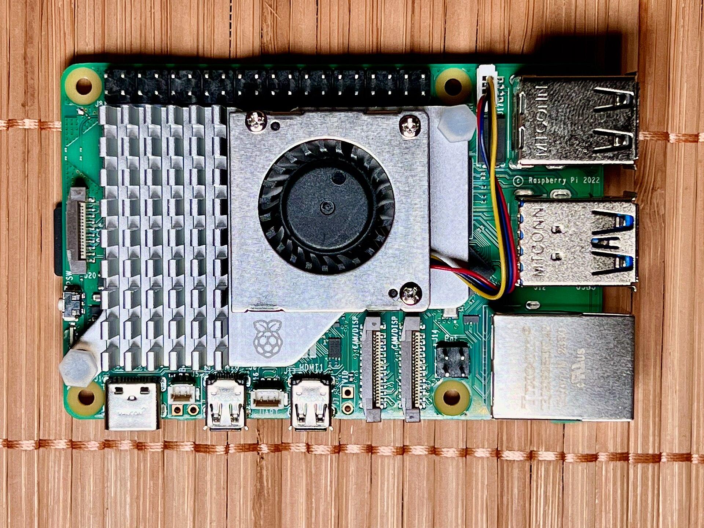

FlagshipRaspberry Pi 5
The everything computer — up to 16 GB of RAM and desktop-class speed.
- Quad Cortex-A76 @ 2.4 GHz
- 1–16 GB LPDDR4X RAM
- Dual 4Kp60 · PCIe 2.0 · Wi-Fi 5
From $45
Best for: desktop, servers, AI